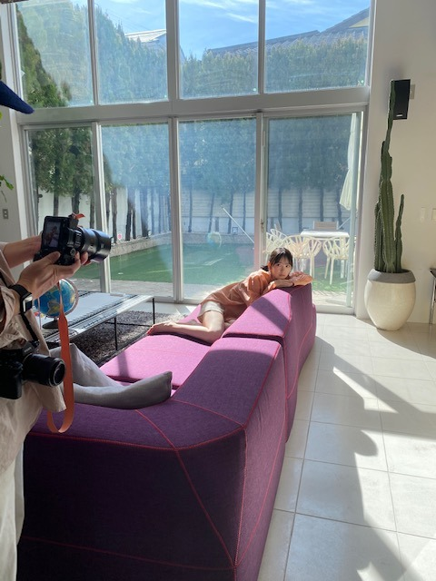
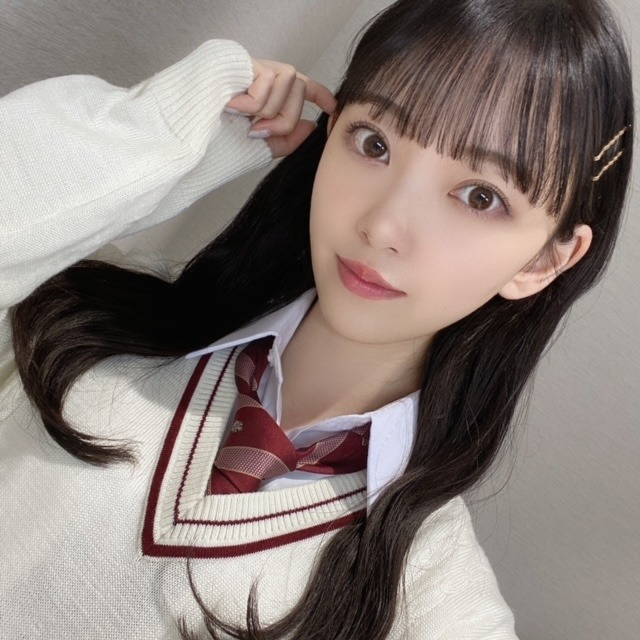
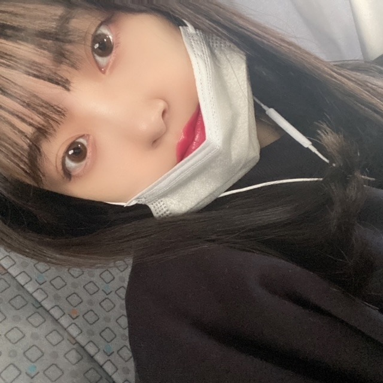
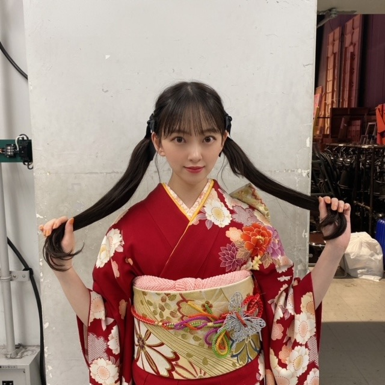
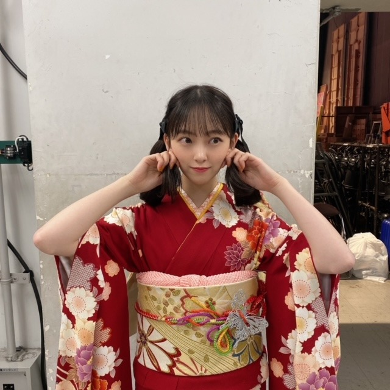
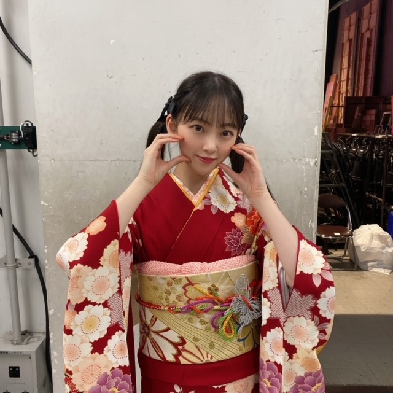

2021/0328Sun乃木坂46の堀未央奈です。
この挨拶も、今日でおしまい。
明日からは"堀未央奈"になります。ね、
乃木坂46に加入して今日で8年ぴったり。
今日の2期生ライブはどうでしたか...？
私は、この時間がずっと続けばいいのに...と何度も心の中で思いました。
リハーサルからみんなの顔が見れなくて、
それは胸がざわざわ苦しくなって
大好きで楽しいのにつらくて寂しくてたくさんの感情が押し寄せてどうしようもできなかったからです。
気持ちを押し殺すのは得意ですが、今回ばかりは溢れました。
8年前、
16歳の私は分からない事だらけで都会にも慣れず、今の私がみても不安になるくらい自分に自信もなければ実力もなくてふわふわしていました。
でもたくさんの経験をしていつのまにか自分の事も人の事も好きになる事ができて、新しいことや挑戦が"怖い"という思いより"楽しい"に変わっていきました。
乃木坂46としての活動も自信と責任を持って
取り組んでこれた8年間だったなと思います。
メンバー、家族、スタッフさん、友達、ファンの皆さん
本当に私は周りの人に恵まれていて支えられながら毎日を過ごしてきました。
強がって一人で抱え込もうとしますが、なんだかんだで周りの人に支えられっぱなしで...
みなさんがいなかったら今の私は存在していないと思います。たくさんの感謝の気持ちでいっぱいです。
MV撮影、ライブ、歌番組、イベント、
撮影、、、何もかもが新鮮で挑戦で...
わたしには夢のような
未だに私が乃木坂46だったという事が
神隠しにあっていて夢だったんじゃないかと思うほど
あっという間で濃密な時間でした。
いや、でもネット検索したらちゃんと出てきますよね。夢じゃない。よかったー。
来世では、乃木坂46に入って、
同じメンバーで、
また違う景色をみてみたいなとも思います。
たのしみ。
明日からは1人になりますが関わる方や応援してくださる方、全ての方への感謝の気持ちと初心を忘れずに頑張っていきたいと思います。
今までの活動で自分の盾となってくれたメイク関連のこともしていって、少しでも自信を持ちたいと思っている方の力になりたいのと、人が幸せになるようなプロデュースなどもしていきたいです。
女優としても0から、自分に厳しく、楽しみながら
私らしくいろんなことに挑戦していきたいなと思います。
堀未央奈を推していて、楽しかったですか？
楽しかった と言っていただけたら、
それだけで私はもう大満足です。
私は皆さんに出会えて本当によかったです。
ありがとうございました


2021.3.28
乃木坂46 2期生 堀未央奈
2021/0226Fri一度あった事は忘れないよ覚えていないだけで
歌や映画や人物のすてきな言葉に
たくさんの影響を受けてきました
すてきな言葉があるから毎日頑張れています
言葉だけじゃなくても
"希望"みたいなものを与えられる人になりたい
ざっくりとしているようで案外具体的な
わたしの人生の目標がこの24年間の間でできました

明日発売のBUBKA
2/27 BUBKA 4月号表紙発売
2/27 16:30〜 NHK総合「坂道テレビ」
2/28 18:30〜 テレ東系「楽しく学べる！最強教科書クイズ」
よろしくお願いします☺︎
最近はいろんな準備を毎日していまして
バタバタ。ありがたいですね。
またお知らせします
3月28日の2期生ライブが
最後の活動となりました
残り1ヶ月...案外最後が近くて
今ようやく実感してきています
1期生の皆さん、3.4期生のみんなとのライブは
先日のバスラが最後でした
みんなの笑顔が改めて大好き。
ずっと憧れだったしこれからもそんな存在の先輩方、
かわいくて放っておけない妹のような後輩たち、
いつもサポートしてくださるスタッフさんに
応援してくださるファンの皆さん
たくさんのすてきな出会いがあったから
こんなにも"人"を、
"乃木坂"を好きなれたんだと思います
とあるオーディションに最終審査で落ちて
悔しい思いをして岐阜に帰り、
それからはバイトをしながら毎日何となく
過ごしていました
そのあと、乃木坂のオーディションに
最後の挑戦として受けて合格することができたあの日からわたしの人生は大きく変わりました
どんな道だろうと
どんな靴を履いていようと
わたしらしくまっすぐ歩いて
いきたいと思います

もう3月ですね
花粉に負けず新生活に向けて
一緒に頑張りましょう~
みおな
2021/0208Monジブリパークがたのしみすぎて寝れない毎日が続いていてまあ2時には寝てます
こんにちは！
寒かったり暖かかったり
わがままな天気が続いていますね
platinum FLASH発売中です！
ほかにも色々お知らせもあるので（╹◡╹）♡
楽しみに待っていてください（╹◡╹）♡
バスラもうすぐですね〜
というかもう2月なんですね
いつも今って何月だ?とわからなくなります
だいすきな豆を食べるイベント節分も終わったし
2月もあっという間なんだろなぁ
春が来るなぁ
花粉はもう来てるなぁ
...
髪を洗っているときは無心で
RIPSLYMEさんの歌を口ずさむのが癖で、
ラップって歌っていて心地良いんですよとても
姉の影響で中学からきいてるので
もう歌詞は頭に入ってます
いつか自作ラップしてみたいですね〜
【 ジブリパーク開園が待ち遠しい 】
来年の秋かあ
待ち遠しいなあ
ジブリパークが今のモチベ
何よりも楽しみタノシミたのしみtanoshimi
今月、初オンライントーク会があります
ミートアンドグリート って言うと美味しそうだから
オンライントーク会って言いますね
楽しい話たくさんしたいです！
いつもの握手会みたいな！
面白い話たくさんしてほしい〜！しましょ〜！

ヨーグルトたべてくる！またね！
2021/0110Sun最近のマイブームはGoogle Earthで行きたい場所に行った気分になること ps.エモくないのよ全然
僕は僕を好きになる のmvが公開されました
乃木坂46としてのmv撮影はこれが最後でした
制作の方々の中では監督さんだけが
わたしの卒業を知っていたので
みなさんにちゃんとご挨拶できなかったことが
心残りです
制作に携わってくださったみなさん
ありがとうございました...届きますように
そしてまたどこかでご一緒できたら嬉しいです！
最近は優里さんのドライフラワーを
よく聴いてますが
アゲアゲなpopsongよりも
しっとりとした曲や落ち着いた曲が好きみたいです
今日の乃木坂工事中では
新年らしくお着物を着ています
2年前かな？着た時もツインをしたのですが
今回も途中から髪が邪魔でツインにしました☺︎



高めツインをするとりんごさんが必ず
かわいいってきゅるきゅるな目で
褒めてくれます笑
やりがいがあります笑
素敵なお着物を用意してくださり
ありがとうございます^ - ^
2021年は、世界中が素敵な一年になりますように
そして明日は成人の日
新成人の皆さん、おめでとうございます☺︎
気付けば成人を迎えのは4年前...
"曇り空にも雨にも負けない太陽でいたい"
そう自分の中で思ってきました
どんなものにも惑わされず、自分の道を進む
果たして自分の選択は正しいのか
そう悩む時もたくさんありました
たくさん怖くもなりました
でも、ちゃんと自分の奥底の気持ちに
耳を傾けたら正解はわかります
正しい選択ができないのは自分自身の軸が
ぶれていて、軸自体がまだ脆いのかもしれない
少しずつ、少しずつ、自分を高めて行けたら
きっといつか自分の為にも誰かの為にも
動ける日がくると思っています
わたしが大切にしている言葉
"悔しい思いをするから成長する
悔しい。はチャンス"
悔しい事があると人はなんで自分だけ、
なんて不運なんだと悲観的になります
でも私はその悔しさこそが原動力だと思っているので
よし、もっともっと頑張ろうって思えます
悔しさを人にぶつけた時点で自分の負けです
誰かを落として、不幸にしてまで自分が救われたいなんていう考え方は絶対に間違っているし、自分も幸せになりたいなら自分自身が変わっていって成長しないと意味がない。
だから悔しさをあくまでもポジティブに変換してます。
悔しいからこそ自分がしてほしかったことを誰かにしたり、自分でもう一度頑張ってみる。
簡単な道では無いし苦労もあるけど
自分にちゃんと向き合える人は
そう生きていくべきなんじゃないかと思います
人生は思い通りにはいかないけど
自分が描く未来や夢を諦める必要はないし
"思い通り"じゃなくても、"想う道"を歩めばいい
今年は乃木坂46という場所を離れ
新たな道へと進みますが
1つ1つの試練や壁を楽しみながら
頑張りたいなと思っています
そして周りの人を笑顔に、幸せに導ける大人になりたいと改めて思います
どうか新成人の皆さんの新たな道が
惑わされることのなく
幸せと希望に満ちたものとなりますように
寒いね、餅食べたい
では☺︎
2021/0106Wed髪切ったのー
切りました。
ボブより長く、ミディアムより短い
ロブです！


短くてごめんなさい>_<
質問返し、次回します〜
なにかあればコメントしてください♪
最近ハマってるドラマは
"あなたが眠っている間に"です
SUZYさんが好きなので見始めたのですが
話も面白いしきゅんきゅんするしで
ハマっています...☺︎
観た方いますか〜？
では☺︎